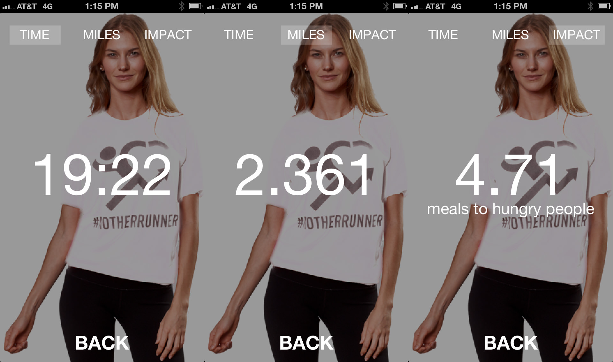
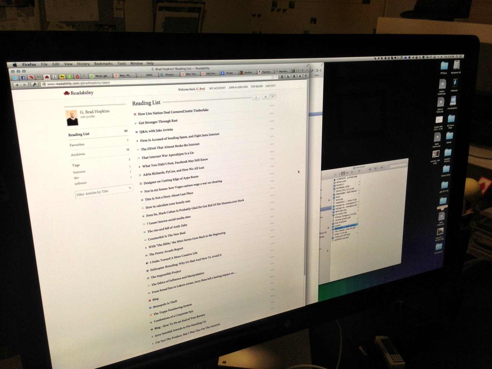

-
Looking for an opportunity to play around with Git, Markdown and Jekyll, I have decided to move this site from ExpressionEngine (EECMS) - which I love and use on most projects - to Jekyll, a static site generator.
• Sep 29, 2016
-
I’m writing this down for me. Not you.
• Sep 29, 2016
-
Update - 7/03/13 - Macworld decided to one up me and provided their own, in-depth instruction guide on how to rip a DVD with handbrake. They go into a lot more detail than I did. Read mine first, and then, if you still can’t figure it out or need more help, check out their guide.
• Jun 25, 2013
-
I’m a big fan of Flickr. Or, at least I was. If I had to describe our relationship I would describe it as complicated. I’m not a huge fan of the new layout but I can live with it.
• Jun 13, 2013
-

Generally speaking, getting in shape is a selfish endeavor. We usually try to get in shape because we want to look better or feel better about ourselves. I mean, we could say we’re doing it for our kids or for our loved ones but if we’re honest, it’s mostly about self-image. I don’t think there’s anything inherently wrong with that, although we can become obsessed with it and let vanity rule our lives, but let’s just assume that we’re not taking it that far.
• May 17, 2013
-
 GIFs are everywhere. I remember building animated GIFs frame by frame in Photoshop using that timeline at the bottom of the screen and hating every minute of it. Now, it has become some sort of art form? How did this happen? Apps, I guess. And, faster internet. Oh well, who am I to reject a novel art form?
• May 10, 2013
GIFs are everywhere. I remember building animated GIFs frame by frame in Photoshop using that timeline at the bottom of the screen and hating every minute of it. Now, it has become some sort of art form? How did this happen? Apps, I guess. And, faster internet. Oh well, who am I to reject a novel art form?
• May 10, 2013
-
 Internet privacy and the way companies like Facebook, Google and Twitter use our data has been on my mind recently. Here are a collection of links related to those topics. At some point, I’m going to pull it all together and express my feelings on this important topic. For the time being, these are as much for me as they are for anyone finding them here on this page.
• Apr 30, 2013
Internet privacy and the way companies like Facebook, Google and Twitter use our data has been on my mind recently. Here are a collection of links related to those topics. At some point, I’m going to pull it all together and express my feelings on this important topic. For the time being, these are as much for me as they are for anyone finding them here on this page.
• Apr 30, 2013
-
I’ve always been a big fan of the MacHeist deals. The newest bundle (nanoBundle 3) is a great little bundle of apps for $10. Unfortunately, for me, most of the apps that I would want, I already own.
• Apr 22, 2013
-

Need a quick way to toggle between tabs in Safari (or, pretty much any other browser) using keyboard shortcuts?
• Feb 6, 2012
-
I’m a big fan of and use it on most all of the sites that I build. I recently installed a Google Custom Search Engine (CSE) to a site of mine and was hoping to use Google Analytics to track the searches that were performed on the site in the Google CSE.
• Dec 10, 2008